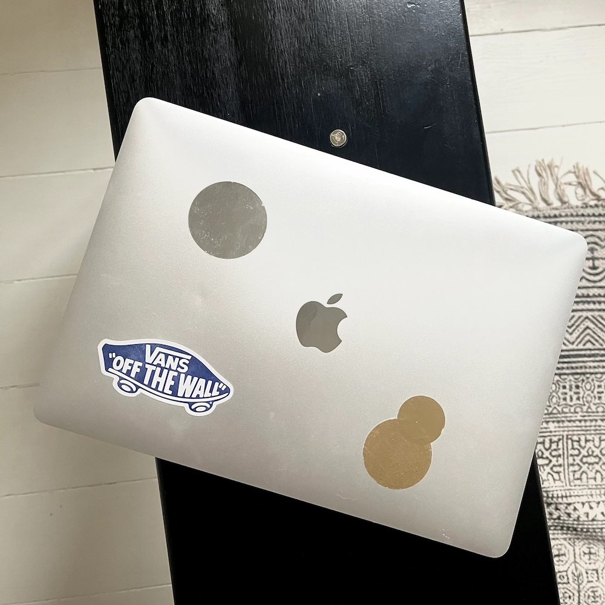

Min Computer

Type
Min egen computer er en MacBook Air fra 2019 i farven silver.
Specifikationer
- Retina skærm
- Skærmen er 13,3"
- LED-baggrundsbelysning og IPS-teknologi
- Original opløsning på 2560 x 1600 ved 227 pixels pr. tomme og understøttelse af millioner af farver.
- Computeren har en integreret Touch ID-sensor.